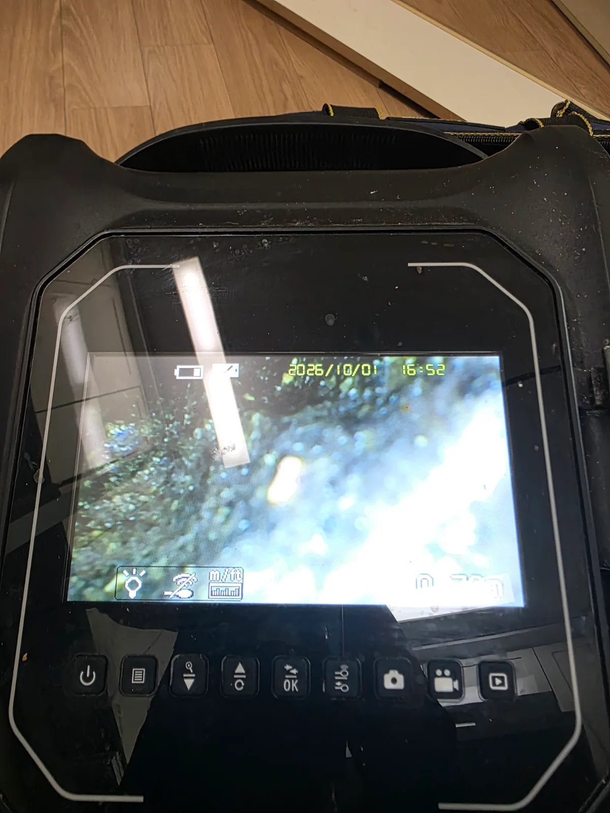
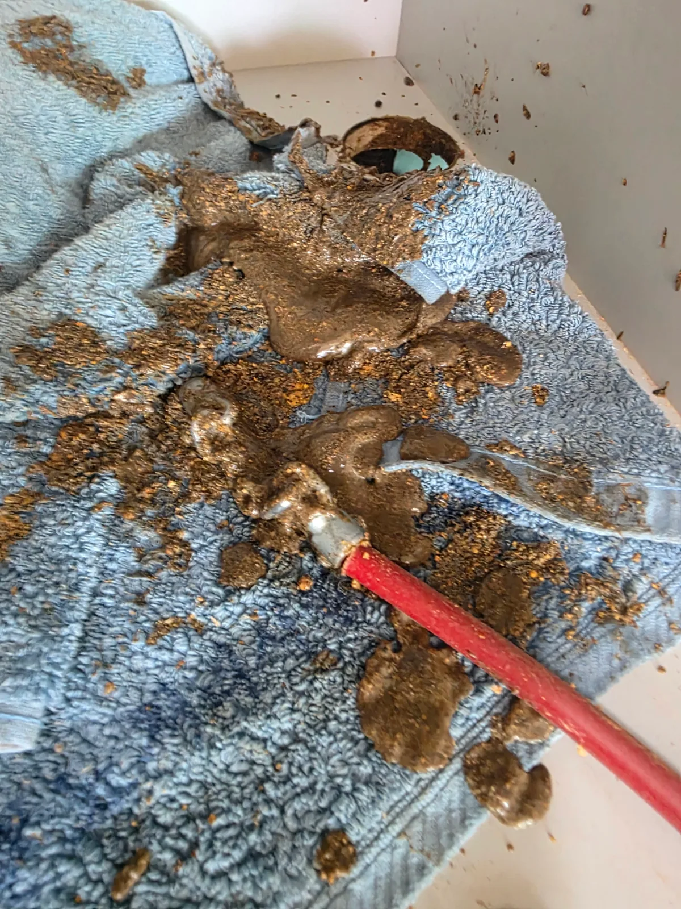

수지구 신봉동 싱크대막힘, 현장 도착 후 진단
현장에서는 싱크대 배수불량을 넘어 물이 다시 올라오는 역류 증상이 확인됐습니다.
이런 경우 싱크볼이나 주름관만 확인하고 끝내기보다는 그 아래로 이어지는 배수배관 내부 상태까지 살펴봐야 합니다.
배관내시경을 투입해 확인해보니 배관 내부가 깨끗하게 비어 있지 않았습니다. 기름때와 각종 배출 찌꺼기가 내벽에 두껍게 붙어 있었고, 일부 구간은 오염물이 통수 공간을 상당 부분 차지하고 있었습니다.
샤프트에 묻어 나온 이물질과 작업 중 배출된 찌꺼기의 양을 봐도 단순한 일시적 막힘이 아니라 배관 내부에 오랫동안 누적된 적체가 심한 현장이었습니다.
1단계: 증상 확인과 필요한 장비 작업
먼저 석션 작업으로 배관 내부에서 흡입 가능한 오수와 이물질을 제거했습니다.
석션으로 내부를 1차 정리한 뒤 샤프트 작업을 진행했습니다. 샤프트를 배관 안쪽으로 투입해 회전시키면서 내벽에 붙어 있던 기름때와 굳은 퇴적물을 떨어뜨렸습니다.
실제로 작업을 진행하자 샤프트 케이블에 기름때와 찌꺼기가 두껍게 묻어 나왔고, 배관 내부에 쌓여 있던 적체물이 상당량 배출됐습니다.
단순히 물이 지나갈 작은 길만 만드는 것으로 끝내기에는 배관 내부 오염 정도가 심한 상태였습니다.

2단계: 원인 구간 처리와 정상 작동 확인
샤프트 작업으로 굳은 퇴적물을 분해한 뒤에는 싱크대 하부 배수배관으로 고압세척 호스를 투입했습니다.
샤프트가 배관 내벽에 붙어 있는 기름때와 굳은 이물질을 깨뜨리는 역할을 했다면, 고압세척은 떨어져 나온 찌꺼기와 배관 안쪽에 남아 있는 잔존 이물질을 강한 물의 흐름으로 밀어내는 역할을 합니다.
이번 신봉동 현장은 싱크대 역류까지 발생할 정도로 배관 내부 적체가 심했기 때문에 1차 통수에 만족하지 않고 고압세척까지 진행했습니다.
싱크대 하부 배관에서 깊숙한 구간으로 호스를 넣어 세척을 진행하면서 떨어져 나온 기름때와 찌꺼기를 배출하고 배관 내부의 흐름을 다시 확보했습니다.

작업 결과와 재발 방지 안내
석션, 샤프트, 고압세척 작업을 순차적으로 진행한 뒤 싱크대에서 물을 흘려보내며 배수 상태와 역류 여부를 확인했습니다.
이번 수지구 신봉동 싱크대막힘은 한 개의 이물질이 걸린 단순 막힘이 아니라, 기름때와 각종 배출 찌꺼기가 누적되면서 배관 내부가 좁아지고 결국 역류까지 발생한 사례였습니다.
싱크대 배수가 예전보다 느려지거나 물을 사용할 때 꿀렁거리는 증상이 반복된다면 완전히 막혀 역류하기 전에 배관 내부를 점검하는 것이 좋습니다.
기름과 많은 음식물을 한꺼번에 흘려보내지 않는 것도 주방 배관 막힘을 줄이는 데 도움이 됩니다.
최종 조치: 배관내시경으로 내부 상태를 확인한 뒤 석션으로 1차 이물질을 제거했습니다. 이후 샤프트를 투입해 배관 내벽에 붙어 있던 기름때와 굳은 찌꺼기를 제거했고, 마지막으로 싱크대 하부 배수배관을 통해 고압세척 호스를 투입해 떨어져 나온 잔존 이물질까지 배출하며 작업을 마무리했습니다.
현장 방문 전 확인하는 비용과 작업 범위
신라건축설비는 현장 증상과 배관 구조를 확인한 뒤 필요한 작업과 예상 비용을 안내합니다. 단순 관통으로 해결되는지, 배관내시경·석션·고압세척 또는 추가 장비가 필요한지는 현장 상태에 따라 달라집니다. 출장비와 야간 작업비, 추가 장비 비용이 발생할 수 있는 경우 작업 전에 먼저 설명하고 동의를 받은 범위에서 진행합니다.
업체를 선택할 때 확인할 사항
무조건적인 ‘0원’ 표현보다 실제 작업 범위, 추가 비용 조건, 사용 장비와 사후 대응 기준을 확인하는 것이 중요합니다. 해결되지 않았을 때의 비용 기준과 작업 후 동일 증상 발생 시 점검 범위를 사전에 문의해두면 불필요한 분쟁을 줄일 수 있습니다.
수지구 싱크대막힘 자주 묻는 질문
싱크대막힘은 왜 반복되나요?
주방 배수관 내부에 기름때·슬러지·음식물 찌꺼기가 누적되거나 배관 구배와 긴 횡주관 때문에 반복될 수 있습니다. 단순 관통 후 다시 막힌다면 배수관 내부 상태를 확인하는 것이 좋습니다. 이번 수지구 신봉동 현장에서 확인한 원인은 다음과 같습니다. 배관내시경으로 확인한 결과 주방 배수배관 내부에 기름때와 각종 배출 찌꺼기가 두껍게 누적되어 있었습니다. 혼합 이물질이 배관 내벽에 붙고 통수 공간을 좁히면서 물이 원활하게 빠져나가지 못했고, 결국 싱크대 쪽으로 역류 증상까지 나타난 것으로 판단했습니다.
싱크대 물이 안 내려가거나 역류하면 싱크대뚫는업체를 불러야 하나요?
물이 천천히 빠지거나 싱크대역류가 반복되면 배수구 입구보다 안쪽 주방 배관에 막힘이 있을 수 있습니다. 현장에서는 배수 상태와 막힌 구간을 확인한 뒤 작업 방법을 정합니다.
싱크대 기름때 막힘은 약품으로 해결되나요?
가벼운 오염은 일시적으로 나아질 수 있지만 굳은 기름 슬러지와 배관 내부 스케일은 약품만으로 충분히 제거되지 않는 경우가 있습니다. 반복 막힘은 장비를 이용한 배관 청소가 필요할 수 있습니다.
싱크대뚫는업체는 어떤 장비로 작업하나요?
막힘 위치와 배관 상태에 따라 석션, 샤프트, 배관내시경, 배관 스케일링 장비 등을 사용합니다. 필요한 장비는 현장 진단 후 결정합니다.
싱크대막힘 비용은 어떻게 정해지나요?
막힘 구간의 길이와 오염 정도, 석션·샤프트·내시경 등 장비 투입 범위에 따라 달라질 수 있습니다. 작업 전 예상 범위와 추가 비용 조건을 먼저 안내합니다.
싱크대 악취도 배수관 막힘과 관련 있나요?
기름 슬러지와 음식물 오염이 배수관 내부에 쌓이면 배수 불량과 함께 악취가 나타날 수 있습니다. 다만 트랩이나 연결부 문제도 있어 현장 상태를 함께 확인해야 합니다.
싱크대막힘 서울·경기 출동지역
신라건축설비는 수지구 신봉동 현장을 포함해 서울 25개 구와 경기도 31개 시·군의 배관 문제를 상담합니다. 현장 거리와 기사 배정 상황에 따라 출동 가능 여부를 먼저 안내드립니다.
서울 전 지역
강남구 · 강동구 · 강북구 · 강서구 · 관악구 · 광진구 · 구로구 · 금천구 · 노원구 · 도봉구 · 동대문구 · 동작구 · 마포구 · 서대문구 · 서초구 · 성동구 · 성북구 · 송파구 · 양천구 · 영등포구 · 용산구 · 은평구 · 종로구 · 중구 · 중랑구
경기도 주요 출동지역
수원시 · 용인시 · 고양시 · 화성시 · 성남시 · 부천시 · 남양주시 · 안산시 · 평택시 · 안양시 · 시흥시 · 파주시 · 김포시 · 의정부시 · 광주시 · 하남시 · 광명시 · 군포시 · 양주시 · 오산시 · 이천시 · 안성시 · 구리시 · 의왕시 · 포천시 · 양평군 · 여주시 · 동두천시 · 과천시 · 가평군 · 연천군